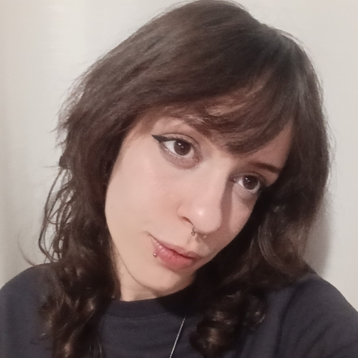

Tecnologia em Análise e Desenvolvimento de Sistemas
Faculdade de Tecnologia De Mogi Mirim “Arthur De Azevedo” | 2024 – 2027

Email: larissaferri9@gmail.com | Localização: Mogi Guaçu, São Paulo
Estudante no 6º semestre do curso superior em Análise e Desenvolvimento de Sistemas, com formação técnica em Desenvolvimento de Sistemas. Possuo conhecimentos em Banco de Dados, Análise de Dados e Sistemas, Desenvolvimento Back-end e Front-end, Prototipagem e Pacote Office. Tenho experiência em projetos acadêmicos desenvolvidos em equipe, participação em maratonas de programação e constante busca por aperfeiçoamento por meio de cursos práticos.
Faculdade de Tecnologia De Mogi Mirim “Arthur De Azevedo” | 2024 – 2027
ETEC “Pedro Ferreira Alves” | 2021 – 2023
AI/R Fellowship | 2026
PrograMaria | 2026
Oracle Academy | 2025
Projeto de TCC (Em andamento) – Sistema web para avaliações de jogos e gerenciamento de listas.
Desenvolvimento de análises e dashboards utilizando dados reais com Python e SQL.
Sistema de reserva de salas para reunião.
Jogo de acolhimento virtual em estilo RPG para fins educativos.